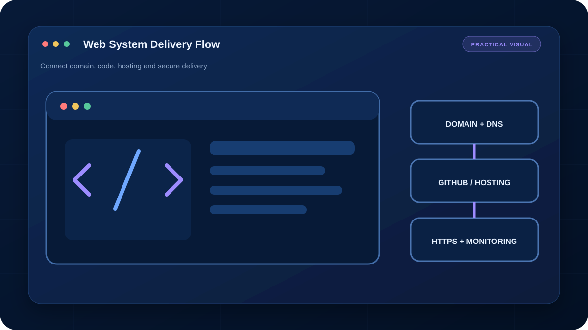

คลังความรู้จาก งานจริง
18 บทความ แยกเป็นเรื่องสั้นที่นำไปตรวจ แก้ปัญหา และตัดสินใจต่อได้ทันที
ค้นหาเรื่องที่ ต้องการใช้ตอนนี้
เนื้อหาสำหรับผู้เริ่มต้น เจ้าของงาน และผู้ดูแลระบบ โดยไม่เปิดเผยข้อมูลลูกค้าหรือระบบภายใน

0x80070035 และ Network Path ควรไล่ตรวจอะไรบ้าง?
ตรวจปัญหา Network Path และ File Sharing บน Windows จาก IP, Gateway, DNS, Firewall ไปจนถึง Permission อย่างเป็นลำดับ
อ่านบทความ →
DHCP กับ Static IP ใช้ต่างกันอย่างไร?
เข้าใจ DHCP, Static IP และ DHCP Reservation พร้อมแนวทางเลือกใช้และป้องกัน IP Conflict ในบ้านหรือสำนักงาน
อ่านบทความ →
จัดระเบียบไฟล์ให้หาเจอและสำรองง่าย
ออกแบบโครงสร้างโฟลเดอร์ ชื่อไฟล์ Version และ Archive บน Windows ให้ค้นหา ส่งต่อ และสำรองข้อมูลได้ต่อเนื่อง
อ่านบทความ →คอมช้าต้องเช็กอะไร ก่อนรีเซ็ต Windows
แนวทางแยกสาเหตุคอมช้าจาก CPU, RAM, Disk, Startup, Update และ Hardware โดยไม่รีบลง Windows ใหม่
อ่านบทความ →
ตรวจไวรัสและโปรแกรมขุดเหรียญใน Windows
เช็กร่องรอย CPU/GPU สูง โปรแกรมเริ่มพร้อมเครื่อง Scheduled Task และ Browser Extension พร้อมลำดับรับมือที่ไม่ทำลายหลักฐาน
อ่านบทความ →Backup แบบ 3-2-1 ทำอย่างไรให้กู้คืนได้จริง
ออกแบบสำเนาไฟล์ให้รอดจากเครื่องพัง ลบผิด Ransomware และบัญชี Cloud มีปัญหา พร้อมวิธีทดสอบกู้คืน
อ่านบทความ →Wi-Fi ช้าหรืออินเทอร์เน็ตช้า แยกอย่างไร
ทดสอบจาก Gateway, สาย LAN, Speed Test และตำแหน่งใช้งาน เพื่อแยกปัญหา Wi‑Fi ภายในออกจากผู้ให้บริการอินเทอร์เน็ต
อ่านบทความ →Router, Switch และ Access Point ต่างกันอย่างไร
เข้าใจหน้าที่ของอุปกรณ์เครือข่ายสามชนิด พร้อมโครงสร้างที่เหมาะกับบ้านและสำนักงานขนาดเล็ก
อ่านบทความ →ติด CGNAT แต่อยากเข้าระบบจากภายนอก ทำอย่างไร
อธิบาย Public IP, CGNAT, Port Forward และทางเลือก VPN แบบเชื่อมออกจากภายในสำหรับกล้อง HMI NAS หรือ Remote Support
อ่านบทความ →VLAN สำหรับสำนักงานเล็ก: จำเป็นเมื่อไร
แนวทางแยกเครือข่ายพนักงาน แขก กล้อง และอุปกรณ์ IoT ด้วย VLAN พร้อมข้อควรตรวจเรื่อง Switch, AP และ Firewall
อ่านบทความ →เช็ก Phishing ก่อนกด ด้วย Checklist 7 จุด
ตรวจผู้ส่ง Domain ลิงก์ ไฟล์แนบ ภาษาเร่งด่วน และช่องทางยืนยัน ลดความเสี่ยงบัญชีถูกขโมย
อ่านบทความ →ตั้งรหัสผ่านและ MFA ให้ปลอดภัย ใช้งานได้จริง
วางระบบ Passphrase, Password Manager, MFA และ Recovery Code สำหรับบัญชีสำคัญโดยไม่ใช้รหัสซ้ำ
อ่านบทความ →
อ่านสเปกและใบเสนอราคา IT อย่างไรไม่ให้เทียบผิด
เริ่มจาก Requirement แล้วแยก Must, Should, Optional ก่อนเทียบ CPU, RAM, Storage, Network, Warranty และ License
อ่านบทความ →สินค้า EOL: วิธีหารุ่นทดแทนให้เทียบเท่าจริง
ตรวจ EOL/EOS, Compatibility และเงื่อนไข Must-have ก่อนจัดกลุ่ม Equivalent, Alternative และ Not Equivalent
อ่านบทความ →TCO คืออะไร ทำไมของราคาถูกอาจแพงกว่าใน 3 ปี
คำนวณต้นทุนรวมของ Hardware, License, Support, Energy, Downtime, Migration และการต่ออายุเพื่อเปรียบเทียบข้อเสนออย่างเป็นธรรม
อ่านบทความ →
อัปเว็บ GitHub Pages ให้ลิงก์และรูปไม่พัง
จัดโครงสร้างไฟล์ ใช้ Relative Path ตรวจตัวพิมพ์เล็กใหญ่ และตั้งค่า Pages ให้เว็บ Static เปิดได้ครบทุกหน้า
อ่านบทความ →เว็บ Static หรือ Backend เลือกแบบไหนดี
เปรียบเทียบเว็บ HTML บน GitHub Pages กับระบบที่มีฐานข้อมูล Login API และสิทธิ์ผู้ใช้ พร้อมข้อจำกัดด้านความปลอดภัย
อ่านบทความ →Domain, DNS และ SSL/TLS ทำงานร่วมกันอย่างไร
เข้าใจ A, CNAME, MX, TXT, Certificate และลำดับตรวจเมื่อเว็บเข้าไม่ได้หรือ HTTPS เตือน
อ่านบทความ →